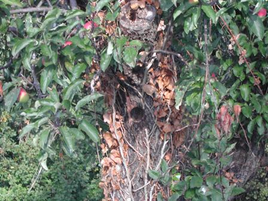
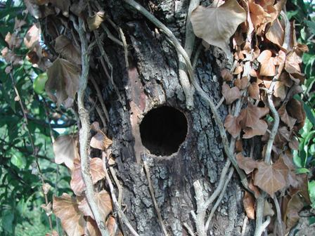
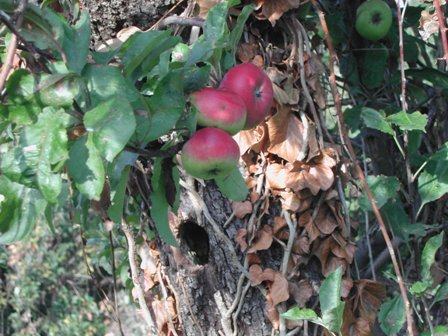

Ai margini del bosco, a due passi da casa, c'è questo vecchissimo melo semiselvatico, che fa delle piccole mele verdi e rosse di quelle qualità antiche ormai quasi scomparse.
Mai sarebbero commercializzabili queste mele, piccole, dure, asprigne, che ne devi spezzettare una cestinata per cuocerne un tegamino con un po' di zucchero e una scorzetta di limone oppure metterle nel forno così come stanno.
Vanno mangiate cotte, d'inverno, e sono meravigliose.
Su questo melo uno dei picchi che ogni tanto mi gironzolano intorno a casa ha fatto quest'anno il suo bel bucone per il nido.




L'ho visto una settimana fa che becchettava nel prato, grosso e ben nutrito, testa rossa e piumaggio marroncino giallastro.
Un bel volatile, non so se sia quello del nido; in ogni caso il nido l'anno scorso non c'era.
Spero che dal buco siano usciti tanti picchietti.
Buona permanenza a te, e buon autunno a tutti!
1 commenti